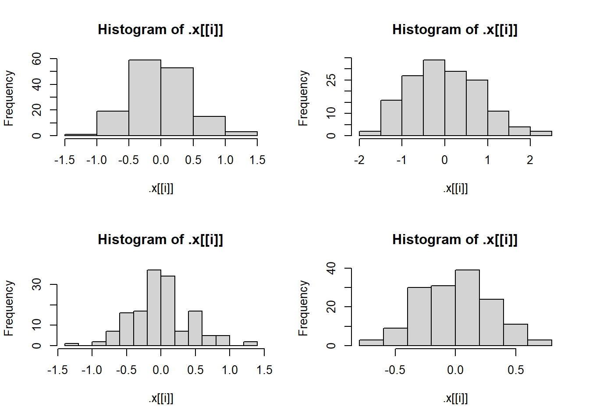

library(purrr)
getRMSE <- function(resp_vec, pred_vec, ...){
squared_error <- map2(resp_vec, pred_vec, \(x,y) (x-y)^2)
squared_mean <- mean(unlist(squared_error),...)
square_root <- sqrt(squared_mean)
return(square_root)
}Homework 6
Task 1: Conceptual Questions
What is the purpose of
lapply()function? What is the equivalentpurrrfunction?lapplyapplies a function to a list. The equivalentpurrrfunction ismap().Suppose we have a list called
my_list. Each element of the list is a numeric data frame (all columns are numeric). We want uselapply()to run the codecor(numeric_matrix, method = "kendall")on each element of the list. Write code to do this below! (I’m really trying to ask you how you specifymethod = "kendall"when callinglapply()).
lapply(X = my_list, MARGIN = 2, FUN = cor, method = "kendall")What are two advantages of using
purrrfunctions instead of the BaseR apply family? More consistency and helper functions!What is a side-effect function? A function that does not change the data, but produces something. Examples are print(), write_csv(), and plot().
Why can you name a variable
sdin a function and not cause any issues with thesdfunction? This is due to lexical scoping. When you call a function, it creates a temporary function environment. It remains in that environment and doesn’t override the sd function. If R doesn’t find the object in the current environment, then it will search up the path and can still access the sd function.
Task 2: Writing R Functions
- Write a basic function that takes in a vector of responses and a vector of predictions and outputs the RMSE.RMSE is the square root of the average of squared errors.
- Run the code to create some response values and predictions.
set.seed(10)
n <- 100
x <- runif(n)
resp <- 3 + 10 * x + rnorm(n)
pred <- predict(lm(resp ~ x), data.frame(x))Test Function:
getRMSE(resp, pred)[1] 0.9581677Manually replace two of the response values with missing values (NA_real_) (just assign two values to NA_real_).
resp[1] <- NA_real_
resp[2] <- NA_real_Test the RMSE function without and with specifying the behavior to deal with missing values.
#without
getRMSE(resp, pred)[1] NA#with
getRMSE(resp, pred, na.rm = TRUE)[1] 0.9661699- Write a basic function that takes in a vector of responses and a vector of predictions and outputs the Mean Absolute Deviation.
getMAE <- function(resp_vec, pred_vec, ...){
abs_diffs <- map2(resp_vec, pred_vec, \(x,y) abs(x-y))
mean_diffs <- mean(unlist(abs_diffs),...)
return(mean_diffs)
}- Run the the following code to create some response values and predictions.
set.seed(10)
n <- 100
x <- runif(n)
resp <- 3 + 10 * x + rnorm(n)
pred <- predict(lm(resp ~ x), data.frame(x))Test getMAE() function.
getMAE(resp, pred)[1] 0.8155776Replace two of the response values with missing values.
resp[4] <- NA_real_
resp[5] <- NA_real_Test the MAE function without and with specifying the behavior to deal with missing values.
#without
getMAE(resp, pred)[1] NA#with
getRMSE(resp, pred, na.rm = TRUE)[1] 0.9448805- Create a wrapper function that can be used to get either or both metrics returned with a single function call.
MAE_RMSE_wrapper <- function(resp_vec, pred_vec, return_MAE = TRUE, return_RMSE = TRUE, ...){
if (!is.vector(resp_vec)) {stop("Responses are not a vector!")}
if (!is.vector(pred_vec)) {stop("Predictions are not a vector!")}
if (!is.numeric(resp_vec)) {stop("Responses are not numeric!")}
if (!is.numeric(pred_vec)) {stop("Predictions are not numeric!")}
results <- list()
if(return_MAE) {
results$MAE_result <- getMAE(resp_vec, pred_vec,...)
}
if(return_RMSE) {
results$RMSE_result <- getRMSE(resp_vec, pred_vec,...)
}
return(results)
}- Run the following code to create some response values and predictions.
set.seed(10)
n <- 100
x <- runif(n)
resp <- 3 + 10 * x + rnorm(n)
pred <- predict(lm(resp ~ x), data.frame(x))Test function. Call it once asking for each metric individually and once specifying both metrics.
#Return both metrics
MAE_RMSE_wrapper(resp, pred)$MAE_result
[1] 0.8155776
$RMSE_result
[1] 0.9581677#Return only RMSE
MAE_RMSE_wrapper(resp, pred, return_MAE = FALSE)$RMSE_result
[1] 0.9581677#Return only MAE
MAE_RMSE_wrapper(resp, pred, return_RMSE = FALSE)$MAE_result
[1] 0.8155776Repeat with replacing two of the response values with missing values.
resp[2] <- NA_real_
resp[3] <- NA_real_MAE_RMSE_wrapper(resp, pred, na.rm = TRUE)$MAE_result
[1] 0.815386
$RMSE_result
[1] 0.9579819MAE_RMSE_wrapper(resp, pred, return_MAE = FALSE, na.rm = TRUE)$RMSE_result
[1] 0.9579819MAE_RMSE_wrapper(resp, pred, return_RMSE = FALSE, na.rm = TRUE)$MAE_result
[1] 0.815386Test function by passing it incorrect data (not a vector).
library(Lahman)
library(tidyverse)── Attaching core tidyverse packages ──────────────────────── tidyverse 2.0.0 ──
✔ dplyr 1.1.4 ✔ readr 2.1.5
✔ forcats 1.0.0 ✔ stringr 1.5.2
✔ ggplot2 4.0.0 ✔ tibble 3.3.0
✔ lubridate 1.9.4 ✔ tidyr 1.3.1
── Conflicts ────────────────────────────────────────── tidyverse_conflicts() ──
✖ dplyr::filter() masks stats::filter()
✖ dplyr::lag() masks stats::lag()
ℹ Use the conflicted package (<http://conflicted.r-lib.org/>) to force all conflicts to become errorsmy_batting <- Batting[, c("playerID", "teamID", "G", "AB", "R", "H", "X2B", "X3B", "HR")] |>
as_tibble()
my_batting# A tibble: 115,450 × 9
playerID teamID G AB R H X2B X3B HR
<chr> <fct> <int> <int> <int> <int> <int> <int> <int>
1 aardsda01 SFN 11 0 0 0 0 0 0
2 aardsda01 CHN 45 2 0 0 0 0 0
3 aardsda01 CHA 25 0 0 0 0 0 0
4 aardsda01 BOS 47 1 0 0 0 0 0
5 aardsda01 SEA 73 0 0 0 0 0 0
6 aardsda01 SEA 53 0 0 0 0 0 0
7 aardsda01 NYA 1 0 0 0 0 0 0
8 aardsda01 NYN 43 0 0 0 0 0 0
9 aardsda01 ATL 33 1 0 0 0 0 0
10 aaronha01 ML1 122 468 58 131 27 6 13
# ℹ 115,440 more rowschar_vec <- c("Hi", "Hello", "Bonjour", "Hola")MAE_RMSE_wrapper(my_batting, pred, na.rm = TRUE)Error in MAE_RMSE_wrapper(my_batting, pred, na.rm = TRUE): Responses are not a vector!MAE_RMSE_wrapper(resp, char_vec, na.rm = TRUE)Error in MAE_RMSE_wrapper(resp, char_vec, na.rm = TRUE): Predictions are not numeric!Task 3: Practice with purrr
Set up:
library(purrr)Let’s create a list object.
lm_fit1 <- lm(Sepal.Length ~ Sepal.Width + Species, data = iris)- Pull out the
coefficientslist element using $,coef(), and thepluck()function frompurrr.
lm_fit1$coefficients (Intercept) Sepal.Width Speciesversicolor Speciesvirginica
2.2513932 0.8035609 1.4587431 1.9468166 coef(lm_fit1) (Intercept) Sepal.Width Speciesversicolor Speciesvirginica
2.2513932 0.8035609 1.4587431 1.9468166 lm_fit1 |>
pluck(coefficients) (Intercept) Sepal.Width Speciesversicolor Speciesvirginica
2.2513932 0.8035609 1.4587431 1.9468166 - Let’s fit a number of different models with the code below.
lm_fit2 <- lm(Sepal.Length ~ Sepal.Width, data = iris)
lm_fit3 <- lm(Sepal.Length ~ Petal.Width + Sepal.Width + Species, data = iris)
lm_fit4 <- lm(Sepal.Length ~ Petal.Width + Petal.Length + Sepal.Width + Species,
data = iris)
fits <- list(lm_fit1, lm_fit2, lm_fit3, lm_fit4)Use the map() function to pull out the coefficients of each model fit from the fits object, using pluck().
map(fits,
\(x) pluck(x, "coefficients"))[[1]]
(Intercept) Sepal.Width Speciesversicolor Speciesvirginica
2.2513932 0.8035609 1.4587431 1.9468166
[[2]]
(Intercept) Sepal.Width
6.5262226 -0.2233611
[[3]]
(Intercept) Petal.Width Sepal.Width Speciesversicolor
2.5210733 0.3715768 0.6982260 0.9881297
Speciesvirginica
1.2375878
[[4]]
(Intercept) Petal.Width Petal.Length Sepal.Width
2.1712663 -0.3151552 0.8292439 0.4958889
Speciesversicolor Speciesvirginica
-0.7235620 -1.0234978 - Use
map()to apply theconfint()function to each model fit in thefitsobject.
map(fits, confint)[[1]]
2.5 % 97.5 %
(Intercept) 1.5206309 2.982156
Sepal.Width 0.5933983 1.013723
Speciesversicolor 1.2371791 1.680307
Speciesvirginica 1.7491525 2.144481
[[2]]
2.5 % 97.5 %
(Intercept) 5.579865 7.47258038
Sepal.Width -0.529820 0.08309785
[[3]]
2.5 % 97.5 %
(Intercept) 1.74261803 3.2995285
Petal.Width -0.02042746 0.7635811
Sepal.Width 0.46205710 0.9343950
Speciesversicolor 0.44520784 1.5310516
Speciesvirginica 0.46412393 2.0110518
[[4]]
2.5 % 97.5 %
(Intercept) 1.6182321 2.72430044
Petal.Width -0.6140049 -0.01630542
Petal.Length 0.6937939 0.96469395
Sepal.Width 0.3257653 0.66601260
Speciesversicolor -1.1982739 -0.24885002
Speciesvirginica -1.6831329 -0.36386273Now, let’s create histograms of the residuals in each model fit!
par(mfrow = c(2, 2)) #set up plotting window
fits |>
map(\(x) pluck(x, "residuals")) |>
walk(hist)
Use set_names() function to give names to the list elements.
resid <- map(fits,
\(x) pluck(x, "residuals")) |>
set_names(c("fit1", "fit2", "fit3", "fit4"))Attempt at using iwalk.
par(mfrow = c(2, 2))
iwalk(resid, names(resid), \(x) hist(x))